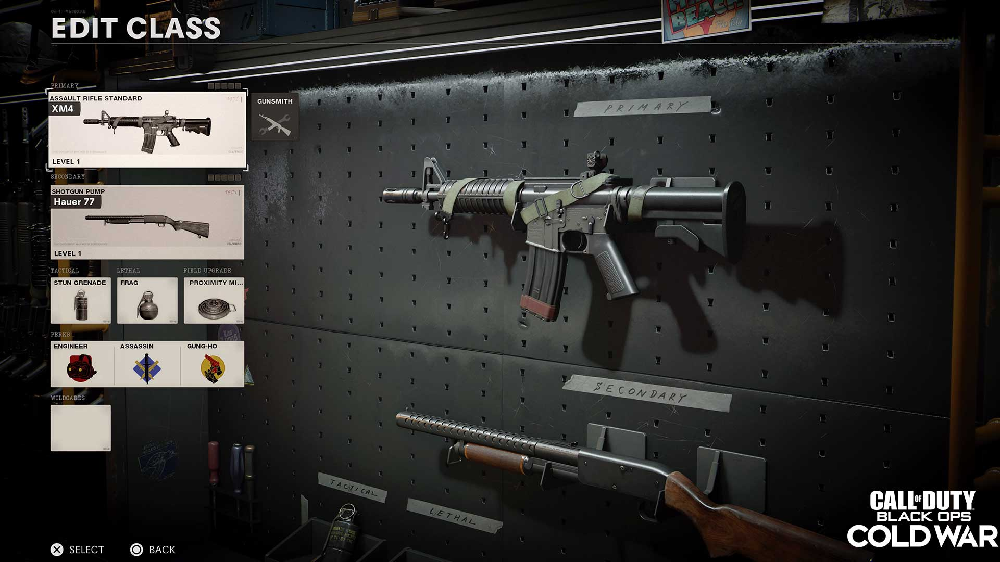
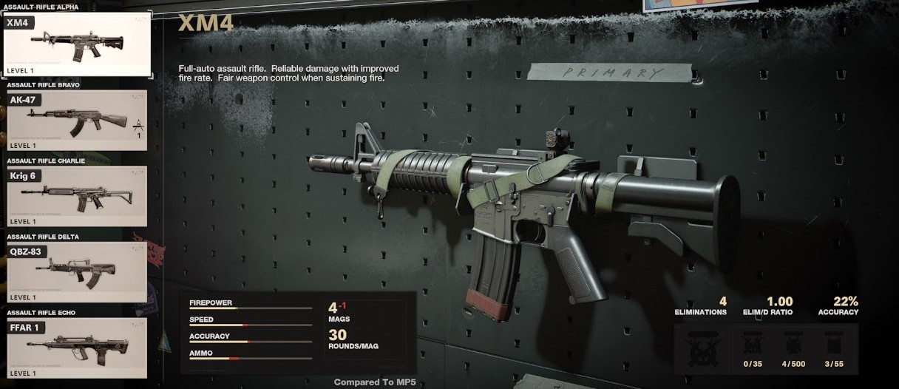

Call of duty is a first-person shooter with plenty of game modes and maps to choose from With matches having two teams of 12 normally
To play call of duty you will need a console or a computer with decent settings and a good Wi-Fi connection and recommended you should just use a controller no matter which one you have since it can be easier to understand
When you get in the game you will see a top menu you can switch through and one of the options will be weapons/classes go to that and choose an SMG since they have the best rate of fire but warning they don’t have great range because of their rate of fire and damage fall off but you should choose one and level it up a bunch by playing
When you load into a match, you'll have to choose a class choose the one you made in the previous step and try and use the main weapon (the SMG) as much as possible to level it up Check your corners when you're going into buildings as people tend to hide in corners of buildings and another good thing to check is the minimap as it can tell you where enemies are located (the minimap is located in the top left corner of your screen)
In the bottom right corner, you’ll have a box that shows your ammo count and next to it will be your tactical and lethal (your support items and your grenades respectively) you can use the lethal to push areas and push enemies out of areas, your tactical can be used to stun enemies or heal yourself depending which one your using
When you're in the create a class menu you have ten options to change which you can rename and change what weapons are in that class all of them come with default weapons in them but you can feel free to change any of them
If you go into one of the classes at the very bottom there's a menu item that looks like a card titled wildcard which when you go into that menu by clicking it, you'll have a choice of 4 cards with different effects
Primary weapons are your main damage output and probably the weapons you'll using for most of the match, for this you’ll want to have multiple classes with multiple types of primary weapons depending on the map
Secondary weapons tend to be the faster weapons you switch to when you're reloading and see an enemy